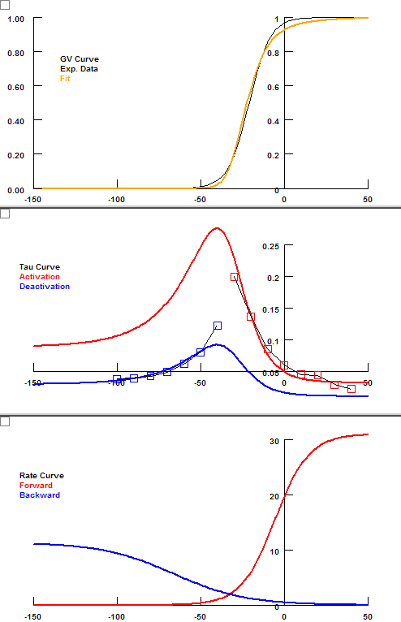
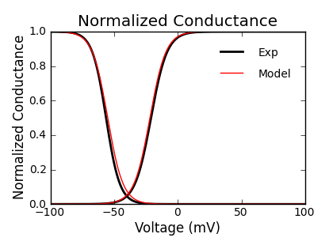
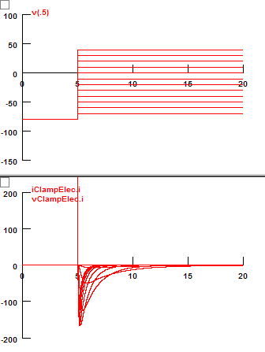
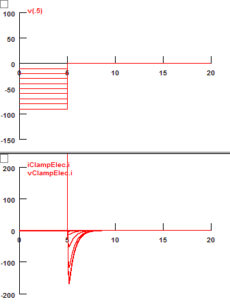
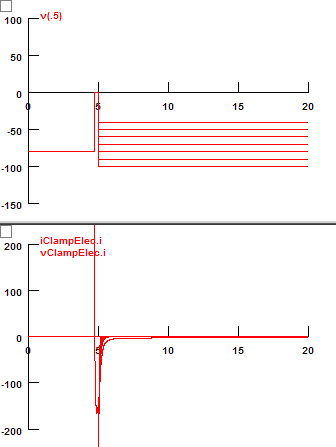
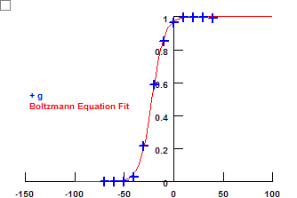
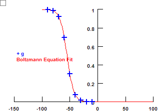
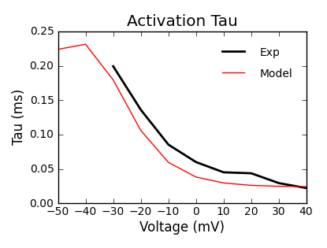
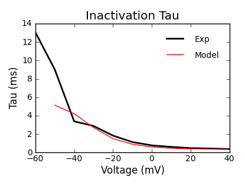
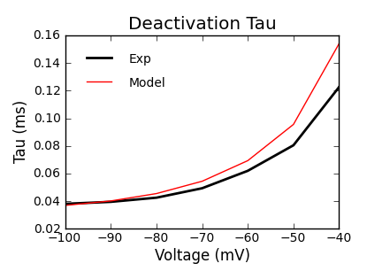

A new INaT model is created based on Dr. Yul Young Park's experimental data.
g = gbar * m3 * h
When finding the parameters, the GV curve is given more weight over time constants (gScale = 4).
| Activation (m) | Inactivation (h) | ||||
| Experiment | Model | Experiment | Model | ||
| Forward Rate | Constant | 31.0 | 2.4 | ||
| vhalf (mv) | -5.6 | -124.3 | |||
| k (mV) | -10.2 | 16.3 | |||
| Backward Rate | Constant | 11.3 | 2.4 | ||
| v1/2 (mv) | -65.8 | -23.0 | |||
| k (mV) | 21.4 | -8.0 | |||
| Properties | v1/2 (mv) | -21 | -21.9 | -56.3 | -55.0 |
| k (mV) | -6.3 | -6.3 | 5.4 | 6.0 | |


Activation |
Inactivation |
Deactivation |
Simulation |
Simulation |
Simulation |
Activation GV curve |
Inactivation GV curve |
|
|
  |
 |